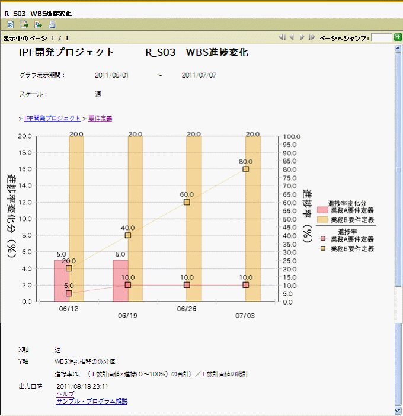

グラフパラメータ
WBSタスク ： IPF開発プロジェクト
グラフ表示期間（開始日） ： 2011年5月1日
グラフ表示期間（終了日） ： 2011年7月7日
スケール ： 週
解説
要件定義における例です。
「業務B」の要件定義は順調に推移していることがわかります。
但し、「業務A」は6/19週から２週間進捗がなく、何かしらの問題が発生している
可能性が考えられ、対策を打つ必要があると想定します。